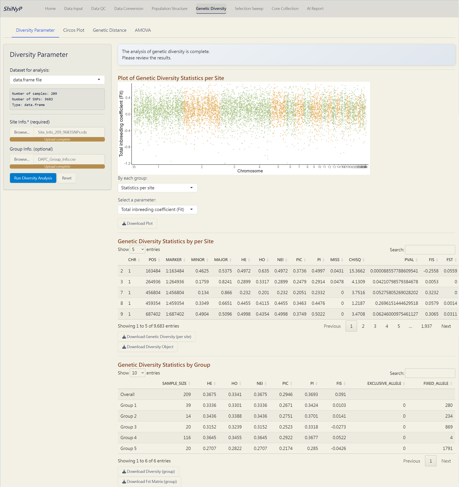

7 Genetic Diversity
➡️ This section contains four subpages: Diversity Parameter, Circos Plot, Genetic Distance, and AMOVA, allowing you to conduct various population diversity and differentiation analyses.

7.1 Diversity Parameter
Calculate key diversity parameters for each SNP site. This approach is performed using the function from snpReady package (Granato et al. 2018).
Required Datasets:
data.frame- Site Info. (RDS) of the current
data.frame, downloadable from Data Input or Data QC pages.
Steps:
Upload Site Info. (required).
Upload Group Info. from DAPC (optional). If uploaded, population-based parameters will be calculated.
Click the Run Diversity Analysis button to generate genetic diversity and the following downloadable files.
Outputs:
Plot of Genetic Diversity Statistics per Site (PDF): A genome-wide scatter plot visualizing the user-selected parameter.
Plot of Genetic Diversity Statistics by Group (PDF): A lollipop plot visualizing the user-selected parameter.
Genetic Diversity per Site (RDS): Contains site information and diversity statistics, can be used as input data in the Selection Sweep/Manhattan PlotPlus.
Genetic Diversity Object (RDS): Contains all genetic diversity results for future use and reproducibility.
Genetic Diversity by Group (CSV): A table showing genetic diversity based on defined group assignments.
Fst Matrix (CSV): A table showing pairwise Fst based on defined group assignments.

Diversity Analysis Complete!
7.2 Circos Plot
Genome-wide diversity is visualized using Circos plots generated with the circlize package (Gu et al. 2014) based on results of diversity parameters in a sliding window format.
Required Dataset:
Auto-import the results from the Genetic Diversity/Diversity Parameter subpage.
Chromosome Info. (CSV): Reference genome information of the current study. For more details about this file, refer to Section 4.3 (SNP Density).
Step 1: Sliding Window
Select parameters to generate sliding window data.
Choose window size (kb) and step size (kp).
Click the Run Sliding Window button to generate sliding window data for circos plot.
7.3 Genetic Distance
Pairwise genetic distance between populations is computed using hierfstat package. For more information, visit https://rdrr.io/cran/hierfstat/man/genet.dist.html.
Required Dataset:
genindwith ‘Group Info.’, downloadable from Data Conversion page after you have both thedata.frameand Group Info.
7.4 AMOVA (Analysis of MOlecular VAriance)
A method for assessing genetic variations and relationships within and between populations (Excoffier, Smouse, and Quattro 1992).This approach is performed using the function from hierfstat and poppr packages (Kamvar, Tabima, and Grünwald 2014; GOUDET 2004).
Required Dataset:
genindwith ‘Group Info.’, downloadable from Data Conversion page after you have both thedata.frameand Group Info.
Step 1: Run AMOVA
- Click the Run AMOVA button to partition genetic variation among and within populations.
Step 2: Run Permutation Test
Choose the number of randomizations for the permutation test to detect the significance of three hierarchical levels. We recommend using 9, 99 (default), 199, 499, 799, or 999 permutations for more classical p-values.
Click the Run Permutation Test button to perform the statistical test.
Outputs:
AMOVA Variance Plot (PDF): A pie chart showing the explained genetic variance of population strata among defined groups.
AMOVA Variance Test (PDF): A plot showing the significance test of population strata among defined groups. The histograms depict randomized strata distributions, with the black line representing genetic variance components.
AMOVA Table (CSV): A table with detailed AMOVA results.
AMOVA Complete!